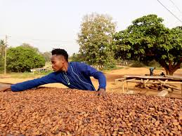

"Fair Trade" – oder fairer Handel – ist ein Ansatz im internationalen Handel, der auf Gerechtigkeit, Transparenz und Respekt basiert. Ziel ist es, benachteiligten Produzent:innen in Ländern des Globalen Südens bessere Handelsbedingungen und langfristige Perspektiven zu bieten.
Fair Trade beinhaltet gerechte Löhne, sichere Arbeitsbedingungen, das Verbot von Kinderarbeit sowie nachhaltige Umweltpraktiken. Produkte, die nach diesen Prinzipien hergestellt werden, sind oft mit einem Fair-Trade-Siegel gekennzeichnet.
Die Bewegung entstand als Reaktion auf die Ungleichheiten des globalen Marktes und wächst seit den 1970er Jahren stetig. Heute ist sie ein fester Bestandteil nachhaltigen Konsums.
Die Schattenseiten des Welthandels
Viele Konsumgüter, die wir täglich benutzen – wie Kaffee, Schokolade oder Kleidung – werden unter Bedingungen produziert, die Menschenrechte verletzen. In Ländern wie Bangladesh, Ghana oder Vietnam arbeiten Menschen für wenige Euro am Tag unter unsicheren und gesundheitsschädlichen Bedingungen.
Fast Fashion ist ein bekanntes Beispiel: Marken wie Shein, H&M oder Zara lassen Kleidung in riesigen Fabriken produzieren, in denen Arbeiter:innen kaum genug verdienen, um zu überleben. Oft arbeiten Kinder mit, Schulbildung bleibt ihnen verwehrt.
Die Bezahlung liegt oft unter dem Existenzminimum. Arbeitsverträge fehlen häufig, soziale Absicherung ebenfalls. Frauen sind besonders betroffen – sie arbeiten oft in der Landwirtschaft oder Textilindustrie, meist ohne Rechte oder Mitsprache.

Auch Umweltprobleme wie Abholzung, Wasserverschmutzung und der Einsatz von Pestiziden sind in der konventionellen Landwirtschaft verbreitet. Die Auswirkungen sind katastrophal – sowohl für Menschen als auch für den Planeten.
Wie hilft Fair Trade?
Der faire Handel stellt konkrete Regeln auf, um diese Missstände zu bekämpfen. Die wichtigsten Prinzipien sind:
Zahlung fairer, existenzsichernder Löhne
Verbot ausbeuterischer Kinderarbeit
Demokratische Organisation in Kooperativen
Langfristige Handelsbeziehungen
Umwelt- und Klimaschutzmaßnahmen
Zusätzlich werden Produzent:innen geschult, um ihre Produktion effizienter, nachhaltiger und qualitätsvoller zu gestalten. So können sie unabhängig werden und ihre Lebensbedingungen langfristig verbessern.
Beispielprodukte & Marken
Fair Trade betrifft viele Alltagsprodukte. Hier einige Beispiele:
Kaffee: GEPA, El Puente, Fair Afric
Schokolade: Tony's Chocolonely, Zotter, Naturata
Bananen: bei Rewe, Edeka, Lidl (mit Fairtrade-Siegel)
Kleidung: Armed Angels, People Tree
Viele dieser Produkte sind nicht nur fair, sondern auch bio-zertifiziert. Das bedeutet, dass sie ohne schädliche Pestizide und unter Rücksicht auf die Umwelt hergestellt wurden.
Statistiken & aktuelle Daten
In Deutschland wurden 2023 über 1 Milliarde Euro mit Fair-Trade-Produkten umgesetzt. Besonders beliebt sind Kaffee, Kakao und Bananen. Weltweit gibt es über 1,9 Millionen Fair-Trade-Produzent:innen in mehr als 70 Ländern.
Der Umsatz von Fair-Trade-Produkten steigt seit Jahren stetig an – ein Zeichen dafür, dass immer mehr Konsument:innen bewusst einkaufen möchten.
Fair Trade & der Glaube
Christliche Ethik fordert Gerechtigkeit, Barmherzigkeit und Verantwortung gegenüber Mitmenschen. Diese Werte spiegeln sich in den Zielen von Fair Trade wider.
„Was ihr für einen meiner geringsten Brüder getan habt, das habt ihr mir getan.“ – Matthäus 25,40
Auch Papst Franziskus ruft in seiner Umweltenzyklika Laudato si’ dazu auf, Konsumverhalten zu überdenken und fair mit Mensch und Natur umzugehen. Er betont, dass soziale und ökologische Gerechtigkeit untrennbar miteinander verbunden sind.
Was kannst du tun?
Achte beim Einkauf auf Fair-Trade-Siegel.
Informiere dich über Herkunft deiner Kleidung und Lebensmittel.
Kaufe weniger, aber dafür bewusster.
Nutze Apps wie „CodeCheck“ oder „Fairtrade Finder“.
Unterstütze Weltläden in deiner Stadt.
Sprich in deiner Schule oder Gemeinde über faire Beschaffung.
Organisiere einen Infostand oder eine Fair-Trade-Aktionswoche.
Starte eine Petition für faire Schulkleidung.
Gründe eine Fair-Trade-AG oder Schulgruppe.
Besuche eine faire Modenschau oder Veranstaltung in deiner Region.
Jede Kaufentscheidung ist eine Stimme für oder gegen Ausbeutung. Dein Beitrag zählt – jeden Tag.
Hinter den Kulissen: Wie funktioniert Fair Trade?
Fair Trade basiert auf einem System von Partnerschaften zwischen Kleinbauern, Händlern und Fair-Trade-Organisationen. Diese garantieren Mindestpreise, zahlen eine zusätzliche Fair-Trade-Prämie und fördern langfristige Handelsbeziehungen.
Ein Produkt erhält das Fair-Trade-Siegel nur, wenn die gesamte Lieferkette bestimmten sozialen, ökologischen und ökonomischen Kriterien entspricht. Regelmäßige Kontrollen und Zertifizierungen stellen dies sicher.
Die Produzent:innen werden in demokratischen Kooperativen organisiert – sie entscheiden gemeinsam über die Verwendung der Fair-Trade-Prämien, z. B. für Schulbildung, Gesundheitsversorgung oder Infrastruktur.
Kritik und Herausforderungen
Fair Trade ist nicht perfekt – einige Kritiker:innen bemängeln die hohen Zertifizierungskosten, die sich kleine Produzenten nicht immer leisten können. Außerdem profitieren häufig nur bestimmte Produktgruppen wie Kaffee oder Schokolade.
Auch Supermärkte nutzen Fair Trade teils als Marketingstrategie, ohne echtes Engagement für Gerechtigkeit zu zeigen. Trotzdem ist Fair Trade ein wichtiger Schritt in die richtige Richtung – echte Veränderung braucht Zeit und Mitwirkung vieler.
Quiz: Teste dein Wissen über Fair Trade
1. Was ist ein Ziel von Fair Trade?
2. Was ist häufig bei konventioneller Produktion ein Problem?
3. Welche dieser Marken ist für Fair Trade bekannt?